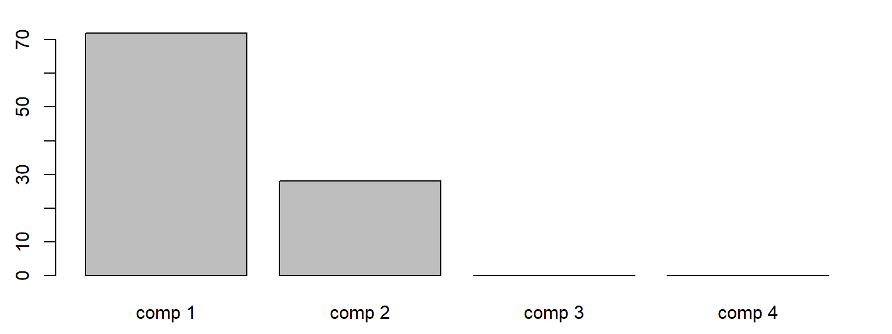
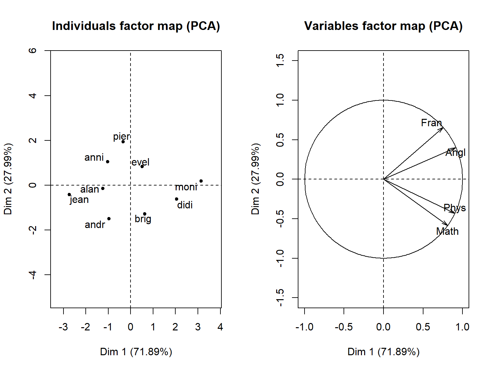

Analyse en Composantes Principales (ACP)
DUT STID 2AFA
FX Jollois
Que veut-on faire ?
- Décrire et/ou résumer l’information contenue dans les données
- Sans formuler d’hypothèses au préalable
- Technique efficace de réduction de dimension
- Méthode de visualisation des données très pertinente
- Méthode de décorrélation des variables, utile pour certaines méthodes statistiques.
Comment ?
- Transformations linéaires d’un grand nombre de variables intercorrélées
- Nombre relativement limité de composantes non corrélées
- Regroupant les données en des ensembles plus petits
- Permettant d’éliminer les problèmes de multicolinéarité entre les variables.
Méthodes descriptives
- Pas de modèle probabiliste, mais elles dépendent d’un modèle géométrique
- Représentations géométriques de ces unités et de ces variables
- Représentations des individus permettent de voir s’il existe une structure, non connue a priori
- Représentations des variables permettent d’étudier les structures de liaisons linéaires
Lecture
- Distinguer des groupes dans l’ensemble des individus en regardant quelles sont les individus qui se ressemblent, celles qui se distinguent des autres, etc…
- Pour les variables, on cherchera quelles sont celles qui sont très corrélées entre elles, celles qui, au contraire ne sont pas corrélées aux autres, …
Idée principale : Projeter le nuage dans un sous-espace de dimension inférieure
Problème
- Etudier simultanément \(p\) variables (\(p\) grand)
- A l’aide d’informations sur \(n\) individus (\(n\) encore plus grand)
Détection
- d’individus atypiques
- de liaisons entre variables
- Recherche de “bonnes” variables
Représentation graphique
- des variables
- des individus
Objectifs
- Constructions de nouvelles variables (appelées facteurs)
- Concentrant la variance du nuage de points
- Sur un petit nombre \(q\) de facteurs
- Représentation graphiques des variables
- Dans un sous-espace de faible dimension (\(q=2\) ou \(q=3\))
- Explicitant les liaisons initiales entre variables
- Représentation graphiques des individus
- Minimisant les déformations du nuage de points
- Dans un sous-espace de dimension \(q\) (\(q<p\))
- Réduction de la dimension (compression)
- Approximation de \(X\) par un tableau de ranq \(q\)
- \(q << p\)
Principe
- Facteurs principaux : combinaisons linéaires non corrélées 2 à 2 des variables initiales
- 1ère composante principale
- Combinaison linéaire des variables qui explique le mieux la variabilité de l’échantillon
- Géométriquement, déterminée par la direction de l’allongement maximum du nuage de points
- 2ème composante principale
- Combinaison linéaire des variables expliquant au mieux la variance résiduelle
- Direction orthogonale à la précédente
- Itération de l’étape précédente
Matrice de corrélation ou de covariance ?
Corrélation
- Les variables sont réduites (donc sans unité) et de même dispersion (écart-type 1)
- Le choix par défaut le plus fréquent (données en général hétérogènes)
- Diagonalisation de la matrice des corrélations
Covariance
- Les variables sont uniquement centrées
- ont des unités et des dispersions différentes
- A n’utiliser que si les données sont homogènes
- Diagonalisation de la matrice des covariances
Combien d’axes retenir ?
- Question délicate, sans réponse définitive
- Critère empirique : point d’inflexion sur les spectres des valeurs propres
But = Représentation graphique
- Conserver l’essentiel de la variabilité tout en retenant un faible nombre de facteurs
- Représenter sur 2 axes (éventuellement 3, voire 4 maximum)
But = Préparation des données
- Préalablement à la réalisation d’une classification
- Pas un inconvénient de retenir beaucoup d’axes
- Supprimer les directions correspondant aux plus petites valeurs propres
- Critère de Kaiser : vp \(>\) moyenne des vp
- si ACP normée, vp \(>\) 1
- Supprimer le bruit
Quelques notations
- \(\mathbf{I}_p\) : matrice identité (diagonale = 1 et le reste = 0), \(\mathbf{1}_n\) : vecteur unité (que des 1)
- \(\mathbf{X} = (x_i^j), i=1,\ldots,n, j=1,\ldots,p\) : matrice des données
- \(\mathbf{x}_i = (x_i^1,\ldots,x_i^p)\) : vecteur individu \(i\)
- \(\mathbf{x}^j = (x_1^j,\ldots,x_n^j)\) : vecteur variable \(j\)
- \(p_i, i=1,\ldots,n\) : poids des individus (très souvent égaux à \(\frac{1}{n}\))
- représentés dans la matrice \(\mathbf{D}\) (poids sur la diagonale et le reste égal à 0)
- si poids identiques, \(\mathbf{D} = \frac{1}{n}\mathbf{I}_p\)
- \(\mathbf{M}\) : métrique utilisée
- \(\mathbf{I}_p\) : si ACP centrée uniquement
- \(\mathbf{D}_\frac{1}{\delta}\) : si ACP centrée réduite (avec \((\frac{1}{\delta_j})\) sur la diagonale (écart-type de \(j\)))
- \(\mathbf{M}'\) : transposée de \(\mathbf{M}\)
Premiers calculs
Utilisation de moyenne arithmétique (pondérée éventuellement), de la variance (elle-aussi pondérée), et de la covariance et de la corrélation entre deux variables
- \(\mathbf{g} = (\bar{x}^1,\ldots,\bar{x}^p)\) : point moyen (barycentre), on a \(\mathbf{g} = \mathbf{X}'\mathbf{D}\mathbf{1}_n\)
- Tableau centré \(\mathbf{Y} = \mathbf{X}-\mathbf{1}_n\mathbf{g} = (\mathbf{I}_p - \mathbf{1}_n\mathbf{1}_n'\mathbf{D})\mathbf{X}\)
- Matrice de variance-covariance \(\mathbf{V} = \mathbf{X}'\mathbf{D}\mathbf{X} - \mathbf{g}\mathbf{g}' = \mathbf{Y}'\mathbf{D}\mathbf{Y}\)
- Matrice de corrélation \(\mathbf{R} = \mathbf{D_\frac{1}{s}}\mathbf{V}\mathbf{D_\frac{1}{s}}\)
- Données centrées-réduites \(\mathbf{Z} = \mathbf{Y}\mathbf{D}_\frac{1}{s}\)
Inertie
Inertie d’un nuage de points :
\[
I_g = \sum_{i=1}^n p_i d_\mathbf{M}^2(x_i - g) = \frac{1}{2} \sum_{i=1}^n \sum_{i'=1}^n p_i p_{i'} d_\mathbf{M}^2(x_i - x_{i'}) = Tr(\mathbf{M}\mathbf{V}\mathbf{M})
\]
- Si classique (\(\mathbf{Y}\)) : \(I_g = Tr(\mathbf{V}) = \sum_{j=1}^p \delta_j^2\).
- Si données réduites (\(\mathbf{Z}\)) : \(I_g = Tr(\mathbf{D}_\frac{1}{\delta^2}\mathbf{V}) = Tr(\mathbf{D}_\frac{1}{\delta}\mathbf{V}\mathbf{D}_\frac{1}{\delta}) = Tr(\mathbf{R}) = p\)
L’ACP revient à chercher \(F_k\), sous espace de dimension \(k\) de \(F_p\), tel que l’inertie du nuage projeté sur \(F_k\) soit maximale.
Rappel : Vecteur et valeur propre
\(\mathbf{v} \ne 0\) vecteur propre de \(\mathbf{A}\)
- s’il existe \(\lambda\) tel que \(\mathbf{A}\mathbf{v} = \lambda\mathbf{v}\)
- \(\lambda\) valeur propre associée à \(\mathbf{v}\)
Matrice de dimension \((p,p)\) : \(p\) valeurs propres
Analyse de \(\mathbf{M}\mathbf{V}\mathbf{M}\)
Matrice carrée \((p,p)\) :
- Diagonalisable
- Valeurs propres \(\lambda_1,\ldots,\lambda_p\) réelles
- Axes principaux d’inertie : \(p\) vecteurs propres (notés \(\mathbf{a}_k\))
- Valeurs propres positives : tri par ordre décroissant
Lien avec l’inertie : \(I_g = Tr(\mathbf{M}\mathbf{V}\mathbf{M}) = \sum_{j=1}^p \lambda_j\)
En ne gardant que les \(q\) premiers axes d’inertie
- Inertie expliquée : \(\sum_{j=1}^q \lambda_j\)
Remarque : l’ACP sur \(k+1\) variables est obtenue par ajout d’une variable d’inertie maximale à l’ACP sur \(k\) variables. Il n’est pas nécessaire de refaire tout le calcul.
Composantes Principales
Coordonnées des individus données par projections orthogonales sur axes principaux
- Composantes principales \(\mathbf{c}_k\) (qui correspondent aux coordonnées des individus sur l’axe \(k\)) :
\[
\mathbf{c}_k = \mathbf{Y} \mathbf{M} \mathbf{a}_k
\]
- Axe \(k\) expliquant une certaine part d’inertie, déterminée par \(\frac{\lambda_k}{I_g}\)
ACP avec \(q\) axes retenus expliquera donc une part d’inertie égale à
\[
\frac{\sum_{j=1}^q \lambda_j}{\sum_{j=1}^p \lambda_j}
\]
Interprétation
Cercle des corrélations
Sur des données centrées-réduites, il est possible de déterminer le cercle des corrélations, représentation des corrélations entre les variables et les composantes principales. Plus la variable sera proche de 1 ou -1 sur une composante, plus celles-ci seront corrélées.
Contribution des individus et des variables
La contribution d’un individu à un axe est égale à \(\frac{p_i (c_{ik})^2}{\lambda_k}\). Si celle-ci est supérieure à \(\alpha p_i\) (\(\alpha\) étant généralement choisi entre 2 et 4), l’individu seront considéré comme fortement contributeur à la création de l’axe. Mais si elle est très forte, il faudra peut-être considéré l’individu comme aberrant et donc envisager de le mettre de côté pour l’analyse. De manière duale, la contribution d’une variable à un axe est égale à \(\frac{\sqrt{\lambda_k}a_k^j}{s_j}\). Si elle est supérieure à \(\frac{1}{p}\), alors la variable sera considérée comme fortement contribuante.
Interprétation
Qualité de représentation
La qualité de représentation d’un individu par un axe est égale é \(\frac{(c_{ik})^2}{\sum_{\ell=1}^p (c_{i\ell})^2}\). Plus elle est grande mieux l’individu est représenté sur l’axe \(k\). De manière duale, la qualité de représentation d’une variable par un axe est égale à \(\frac{\lambda_k (a_k^j)^2}{\sum_{\ell=1}^p \lambda_\ell (a_\ell^j)^2}\). Idem que pour les individus, plus cette valeur est grande et plus la variable est bien représentée sur l’axe \(k\).
Que faire pour interpréter un axe
Pour comprendre ce que reprèsente un axe, il est nécessaire de recenser les variables qui contribuent le plus, ainsi que celles qui sont très bien représentées. Une fois cette étape réalisée, il est possible (si \(n\) n’est pas très grand) de chercher les individus bien représentés ou contribuant fortement à l’axe.
En plus
Il est aussi possible d’introduire des éléments supplémentaires ne participant pas au calcul, mais pouvant être représentés sur les graphiques :
- Variables quantitatives : utile pour expliquer le lien de ces variables avec les variables de l’ACP
- Variables qualitatives : idem
- Individus : utile pour mettre de côté des individus particuliers ou pour analyser des individus d’un autre échantillon
Exemple simple
Notes obtenues par 9 élèves dans 4 matières (cf Besse and Baccini)
| jean |
6.0 |
6.0 |
5.0 |
5.5 |
| alan |
8.0 |
8.0 |
8.0 |
8.0 |
| anni |
6.0 |
7.0 |
11.0 |
9.5 |
| moni |
14.5 |
14.5 |
15.5 |
15.0 |
| didi |
14.0 |
14.0 |
12.0 |
12.5 |
| andr |
11.0 |
10.0 |
5.5 |
7.0 |
| pier |
5.5 |
7.0 |
14.0 |
11.5 |
| brig |
13.0 |
12.5 |
8.5 |
9.5 |
| evel |
9.0 |
9.5 |
12.5 |
12.0 |
Variance et corrélation des variables
Les variables ont des variances sensiblement différentes.
| Math |
12.81 |
| Phys |
10.06 |
| Fran |
13.57 |
| Angl |
8.90 |
On voit bien qu’il y a deux groupes de variables.
| Math |
1.00 |
0.98 |
0.23 |
0.51 |
| Phys |
0.98 |
1.00 |
0.40 |
0.65 |
| Fran |
0.23 |
0.40 |
1.00 |
0.95 |
| Angl |
0.51 |
0.65 |
0.95 |
1.00 |
Part de la variance expliquée
| comp 1 |
2.88 |
71.89 |
71.89 |
| comp 2 |
1.12 |
27.99 |
99.88 |
| comp 3 |
0.00 |
0.09 |
99.97 |
| comp 4 |
0.00 |
0.03 |
100.00 |

2 axes suffisent à représenter 99.9% de l’information présente dans les données.
Représentation graphique

Individus importants
Contribution
| jean |
29.1 |
1.8 |
1.6 |
5.4 |
| alan |
5.9 |
0.2 |
0.1 |
5.3 |
| anni |
4.1 |
10.9 |
10.6 |
0.1 |
| moni |
38.1 |
0.3 |
0.4 |
23.8 |
| didi |
16.3 |
3.9 |
1.9 |
38.0 |
| andr |
3.6 |
22.3 |
2.1 |
19.2 |
| pier |
0.4 |
37.2 |
9.5 |
0.9 |
| brig |
1.5 |
16.5 |
13.6 |
1.6 |
| evel |
1.0 |
6.7 |
60.2 |
5.7 |
| Sum |
100.0 |
100.0 |
100.0 |
100.0 |
Individus importants
Qualité de représentation
| jean |
1.0 |
0.0 |
0 |
0 |
1 |
| alan |
1.0 |
0.0 |
0 |
0 |
1 |
| anni |
0.5 |
0.5 |
0 |
0 |
1 |
| moni |
1.0 |
0.0 |
0 |
0 |
1 |
| didi |
0.9 |
0.1 |
0 |
0 |
1 |
| andr |
0.3 |
0.7 |
0 |
0 |
1 |
| pier |
0.0 |
1.0 |
0 |
0 |
1 |
| brig |
0.2 |
0.8 |
0 |
0 |
1 |
| evel |
0.3 |
0.7 |
0 |
0 |
1 |
Variables importantes
Contribution
| Math |
22.9 |
30.5 |
4.1 |
42.5 |
| Phys |
28.3 |
16.5 |
19.5 |
35.7 |
| Fran |
19.7 |
38.6 |
28.3 |
13.4 |
| Angl |
29.1 |
14.4 |
48.1 |
8.4 |
Qualité de représentation
| Math |
0.7 |
0.3 |
0 |
0 |
| Phys |
0.8 |
0.2 |
0 |
0 |
| Fran |
0.6 |
0.4 |
0 |
0 |
| Angl |
0.8 |
0.2 |
0 |
0 |